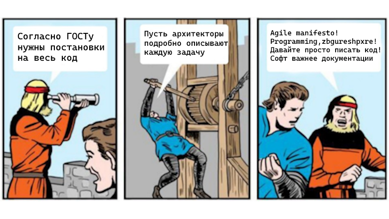

Три недели кодирования экономят два дня проектирования
Статья на хабре с комментариями
Введение
Об авторе
Меня зовут Леонид «Лео» Царев. Я бывший программист на .Net (18+ лет опыта), последние 10 лет я тимлид/архитектор/руководитель. Сейчас я директор департамента разработки в компании Цифра / Цифровая Индустриальная платформа. То, о чем я буду писать, основано на моем опыте работы в компаниях Цифра/ЦИП, Fortis (monopoly.online) и Ланит-Терком. Вопрос баланса между тем, как дать свободу творчества программисту и необходимую гибкость в разработке, но сохранить контроль и сбалансированное принятие решений в архитектуре, меня беспокоил все это время.

TL;DR
Уже в двух компаниях при моем участии был внедрен процесс обязательного технического анализа по задачам для программистов. Смысл технического анализа в том, что перед тем, как взять задачу в работу, программист пишет небольшой (от полстранички) документ про то, как он планирует это сделать, и показывает коллегам/архитектору/тимлиду/тестерам/whatever. Этот документ предназначен для согласования важных деталей реализации перед написанием кода.
Велосипеды
Возможно, эта статья не описывает каких-то уникальных открытий. Многие скажут «да мы всегда так делали». Многие обратят внимание, что схожая практика есть в 12 пунктах Джоэла Спольски. Окей. Я всего лишь хочу поделиться своим жизненным опытом, потому что для меня и компаний, которые я встречал на жизненном пути, он был нетривиальным. Многие отмахнутся от этой идеи как от ненужной бессмысленной бюрократии. Повеяло архитекторами, корпорациями, архитектурными советами и 500-страничными проектами, которые никто не читает? Клянусь, я сам был таким, поэтому вам особо нужно это прочитать.
Предыстория
Ненависть к архитектуре
Когда-то давно, во времена waterfall, написание документации, технических проектов и прочего было обязательным. Многостраничные документы предваряли написание любого кода. Их писали мудрейшие архитекторы на основании других многостраничных документов и спускали с неба простым программистам, причем писали долгие месяцы. Потом программисты долгие месяцы кодировали, потом тестеры долгие месяцы тестировали и выясняли, что пользователю нужно совсем другое. Вспомнили эти вайбы? Мы давно отвергли все это к чертям. Наступил agile, scrum, новый век.
Мы все разговариваем, много и часто. Знаем, что надо быстро программировать и быстро менять. У нас нет времени писать такие многостраничные документы до программирования — в нашем двухнедельном цикле. Преимущества коротких итераций известны всем — такой продукт быстрее развивается, больше подходит пользователям, в нем меньше ошибок, мы делаем меньше ненужной работы. Соответственно, двухнедельные итерации — счастье.
Не нужны эти документы — не нужны и архитекторы. Не нужны замшелые 50-летние старики, которые не умеют программировать, которые мыслят блок-схемами и архитектурными диаграммами, но ни черта не понимают в ORM, kubernetes и паттернах проектирования. Даже когда я сам стал, по сути дела, архитектором, я избегал этого титула как огня и потребовал, чтобы меня записали главным разработчиком. Чтобы подчеркнуть, что я вообще-то умею программировать, могу читать и писать код и умею не только писать документы.
Нет, конечно, по сложным задачам так уж и быть, нужно нарисовать план на доске, потом может даже перенести его в вики. Но это может одна задача из пяти, не больше.
Эта ненависть распространилась и на всю документацию вообще. Я запрещал своим программистам описывать схему базы данных (посмотрите в коде XML-комментарии к классам, описывающим сущности) и схему API (посмотрите в swagger UI). Документация не нужна!
Код-ревью
Как и многие коллеги, я фанат код-ревью. Нет, я СТРАШНЫЙ фанат взаимного код-ревью. Там, где его не было, я его вводил, а там, где было, — с радостью погружался. Мне никогда не надо было убеждать в полезности этой практики, и до сих пор я убежден, что соблюдение правила «четырех глаз» (каждый код перед попаданием в релиз должны увидеть хотя бы два человека — автор и ревьюер) является необходимым условием для качественного кода. Википедия обозначает следующие преимущества код-ревью:
- повышение качества кода и его поддерживаемости (включая читаемость, стиль и проч.)
- более раннее нахождение багов
- обмен знаниями
- взаимная ответственность
- нахождение лучших решений.
Из этого, как ни странно, самым важным я считаю обмен знаниями. Поэтому я противник «иерархических» схем ревью (лид ревьюит всех, его не ревьюит никто) и настаиваю на том, чтобы самый юный джун тоже получал свою долю выступлений в качестве ревьюера.
Мы применяли код-ревью для всего — от исправления стиля («Лёнина висячая запятая» стала притчей во языцех) до обсуждения серьезных архитектурных проблем. Один из больших плюсов код-ревью — это ломка распространенной схемы «индивидуального владения сервисами»: схемы, когда за каждый сервис отвечал ровно один разработчик, и только это разработчик вообще в принципе когда-либо читал код этого сервиса (а иногда только на его локальной машине можно было в принципе сервис собрать).
Код-ревью объединил нас в команду — мы читали код друг друга, мы знали, что творится, мы могли исправить баг в коде товарища. У нас был один стиль и один уровень требовательности — ведь разрешалось залезть в чужой PR непрошенным, и наезд на ревьюера — «как ты поставил аппрув, ты что не читал» было страшным обвинением. Код-ревью очень хорошо работал для нас.
Оффтоп: проверять код стайл на код ревью — зряшняя трата сил! Не делайте так!
Карьера, и как я стал проблемой для команд
Контора росла, мы масштабировались. Я был хорош (как мне кажется и сейчас) в код-ревью, и хорошие разработчики стояли в очередь — ведь я давал полезные замечания. Я начал захлебываться в ревью. Особенно когда вместо одной «моей» команды у меня появилось две, три, четыре «моих». Со своими тимлидами, конечно, сначала подчиняющимися мне неформально, а потом и формально.
Естественно, я начал экономить свое время. Понятно, что я ревьюил не все подряд, а только важное. Но в какой-то момент важного стало многовато, и закапываться во все важное времени не хватило. Я копил очередь, влетал с замечаниями в последний момент, ругался, заставлял все переделывать. Разработчики начали ворчать — опять Леня докопался.
Тестеры стали выть — часто они уже протестировали многое, а тут по итогам ревью прилетела пачка замечаний (здравомыслящих, а иногда прямо и умных, важных), и соответственно пошла пачка правок. Надо делать ретест.
Ко мне появились претензии со стороны тимлидов/менеджеров команд и владельцев/менеджеров продукта. Сроки срывались. Все чаще на скрам-митингах «Лёнины замечания» становились причиной срыва спринта. Все чаще программист мне говорил «а давай не будем переделывать, почти сдали уже, нет сил». Что-то перестало работать.
Следующий шаг, который пришел к нам в голову — борьба за хорошие описания к PR. Если в PR хорошо описано, что сделано, можно понять, следует ли внимательно читать и писать замечания. Это стало работать лучше. Но дальше в нашу голову пришла крамольная мысль. А что, если писать сначала, что планируется, а потом уже делать?
Новый процесс
Итак, собственно новый процесс выглядел так: приступив к работе над задачей, программист читал требования и на основе них писал максимально краткий текст «как я буду реализовывать задачу». В этом документе он освещает:
- В какие компоненты он планирует внести изменения или добавить новые компоненты (джобы и т.д.)
- Внешние контракты, если они есть (между системами, между беком и фронтом, какие поля будут в БД, в сообщениях Rabbit/Kafka и т.д.)
- Миграцию, обратную совместимость, возможность отката
- Изменения в развертывании
- Что потенциально сломается и что надо будет протестировать
- Как мы будем писать автотесты на задачу
Этот документ ревьюится (полный аналог с ревью кода). После завершения ревью — у нас есть план по задаче. Происходит нарезка тасок и они пускаются в работу.
Теперь мы — (а) договорились, что делаем (б) повышаем контроль архитектора и лида над происходящим (в) повышаем прозрачность изменений для тестера и других членов команды (г) минимизируем риск переделок (д) уменьшаем количество конфликтов.
Итог от внедрения этого документа оказался сногсшибательно позитивный. Сроки перестали срываться, ревью и переделки после него стали занимать гораздо меньше времени, перестали происходить неожиданные для всех изменения в важных архитектурных компонентах.
Эффективное использование времени архитекторов
Гигантский мой личный плюс: я смог, сохранив достаточную для себя степень контроля над происходящим, высвободить гигантское количество свободного времени (для работы с людьми, разработки планов масштабных архитектурных изменений, и даже вернулась возможность совмещать с лидством микрокоманды). Такие же плюсы подмечали и остальные архитекторы.
Обратите внимание, в отличие от традиционной схемы «архитектор/системный аналитик проектирует, программист реализует», тут это проектирует программист. Это сохраняет принципы условной взаимозаменяемости agile команд и не превращает работу программиста в «закодировать, что умные парни велят».
Ну и для архитекторов это очень важно. Никто из технарей не хочет превращать свою работу в рутинное расписывание типовых задач. Крутые парни не хотят это делать. Если мы заставляем архитекторов лично расписывать каждую задачу, нам требуется слишком много архитекторов — и их придется набирать из аналитиков, не самых сильных программистов и даже (видел такие варианты) — техписов. Работа архитекторов не «описывать все задачи» — работа архитекторов в этом аспекте «отвечать и контролировать техническое совершенство задач». И теперь мы можем просить у архитекторов не только рутины — можем требовать от них и ожидать, что у них будет достаточно времени на креатив, на инициативные предложения и т.д.
Разумеется, архитекторы могут проектировать какие-то сложные задачи сами. Но они не должны проектировать их все. И, что самое важно, они обретают доверие к остальным членам команды
На следующей работе, в качестве директора по разработке — человека, который стоит над архитекторами, я тоже приобрел гигантский плюс. Я могу контролировать самое важное, смотреть и вмешиваться в изменения, которые затрагивают важнейшие компоненты системы — при этом не трогая рутинные задачи, но зная, что их контролируют архитекторы
Другие плюсы
Ответственность программиста
Программист в этой схеме не может свалить ответственность на архитектора. Как и в случае код-ревью, он писал этот документ (код), его была задача найти оптимальное архитектурное решение. С него можно спросить за результат. Он не кодирует по придуманному кем-то сценарию — он его придумывает.
ADR
Паттерн ADR (Architecture Decision Record) говорит о том, что приняв важное решение, надо записать его с аргументами, чтобы вспомнить через год. Фактически в этом подходе мы получаем этот паттерн «бесплатно» — ведь по каждой задаче мы записали, что и как решили. «Почему» тоже получается автоматически — часто в ходе дискуссии в комментариях. Повторяющийся паттерн диалога: «А почему так? — Так как вот почему. — Согласен, вынеси в текст», — этому немало способствовал.
Spike/discovery фаза и плюсы для планирования
Классический подход scrum: если не знаешь, сколько сделать задачу, возьми небольшое время для изучения (spike), — в этом подходе очень хорошо проявляется. С недельными итерациями подход «Вася берет на неделю технический анализ такой-то фичи и эти три бага» очень хорошо работал. Разработка этого документа (даже вместе с ревью) занимает примерно понятное время. Разработка и тестирование фичи по этому документу — тоже примерно понятное время. Мы превратили одну неопределенную задачу в две гораздо более определенных.
Разумеется, разработка документа может завершиться неудачей — придумано и написано совсем не то, что нужно, на ревью документа это стало понятно. Но даже если так, то со второй итерации, второй попытки, задача точно возьмется. Менеджеры стали гораздо спокойнее относится к мысли «нужно договориться с архитектором, как будем делать» — потому что это стало понятной задачей, понятного скоупа, с артефактом на выходе. Менеджеры стали спокойнее относится к код-ревью — потому что исчезла угроза «на ревью выяснилось, что надо переделать все».
Контроль стека технологий
Стало гораздо меньше протащенных левых библиотек с непонятными лицензиями, велосипедов, дублирующих то, что уже реализовано платформенной командой и прочего. Стало меньше решений «хочу попробовать новую технологию». Это все нельзя было затащить тихой сапой под предлогом «че уж теперь, переделывать что ли». Это плюс.
Product Owner не могут в стратегическое видение
Одна из метрик, которые мы стали собирать, — это соотношение между задачами, которыми мы взяли на анализ, и теми задачами, которые реально пошли в работу. Нормально, когда после анализа, узнав оценку, PO отказывается брать задачу в план. Но у одного PO мы обнаружили аномальное соотношение между этими типами задач — и похоже это коррелировало с отсутствием у PO видения и понимания, куда следует двигаться его продукту, с тем, что он разбрасывается, не зная куда бежать. Это было донесено до его руководителей, подтвердилось и (вкупе с другими проблемами) привело к соответствующему кадровому решению.
Путь в лиды и архитекторы
В этой схеме деятельность программистов похожа на то, чем занимаются лиды и архитекторы. Как и они, программисты проектируют и ревьюят архитектуру других. Самый юный джун видит, как принимаются архитектурные решения, учится их обосновывать, учится задавать вопросы. Мы учим программистов заниматься архитектурой. Собственно, качество проработки этих документов налицо, мы понимаем насколько хорошо мыслит человек — и постепенно после внедрения этой схемы мы стали гораздо меньше брать лидов со стороны: у нас появилось понимание и путь как растить их на месте.
Вовлечение тестеров и других команд
Тестеры в этой схеме стали гораздо больше вовлечены. Хорошие тестеры стали задавать вопросы «а как мы смигрируем данные», «а почему планы на реализацию расходятся с требованиями», «какие автотесты ты планируешь написать» ДО того, как программист начнет писать. Теперь оказывалось, что «оценка не учитывает автотесты», не за день до сдачи. Для тестеров чтение технического анализа оказалось на той же фазе, что и тестирование требований (ваши тестеры же тестируют требования? — если нет, пусть немедленно начнут).
Другие программисты — особенно в том случае, если задевали «их» модули (формально индивидуальное владение кодом было у нас ликвидировано, но все равно есть люди, которые лучше понимают в этих областях) — могут дать очень ценную инфу и советы по реализации. В типовой agile команде невозможно никакому программисту ревьюить ВЕСЬ код, который пишут его коллеги (но некоторые контрол-фрик лиды пытаются). Но в типовой agile команде возможно лиду читать ВСЕ теханализы своей команды, а обычному программисту — читать БОЛЬШУЮ часть теханализов своей команды. Таким образом команда становится командой.
Делая фичи, которые затрагивают другие команды, стало гораздо проще решать эти вопросы. Вместо «вы полезли в наш код какого хера» получилось «вот какие согласованные ВАМИ изменения затрагивают вас».
Вообще Confluence и его аналоги делают процесс расширения ревьюеров очень простым. Тегнуть «@Вася тут будем вашу API вызывать» — очень просто и полезно.
RFC и процессы
В какой-то момент мы так увлеклись процессом написания документов, что обнаружили, что процесс «написать документ, добавить в него галочками всех, кто заинтересован и предложить им окнуть» подходит не только для задач, но и для:
- изменений процессов
- изменений настроек ПО (Jira, Teamcity, etc)
- организационных изменений (конфигураций команд, кадровых перемещений).
- изменений регламентов, кодстайла и т.д.
Старый бюрократический принцип «согласования приносимых на подпись руководителю документов» работает ОЧЕНЬ хорошо. Моим почти универсальным ответом на вопрос «у меня вот такая идея, которая в твоей власти, давай так сделаем?» — стало «вот какие у меня мысли, но прошу создать документ в Confluence и отправить на общее обсуждение». Это прямо огненно! Естественно, по большинству таких документов почти всегда понятно, кто принимает финальное решение, но ситуаций «директор департамента принял, поговорив с одним начальником отдела, некоторое решение, а другой начальник отдела охренел» — стало сильно меньше. Давать заднюю приходится мне как начальнику гораздо реже, и мне это нравится. Ну все остальные плюсы валидны (например, от вопросов и наездов по проекту регламента технической поддержки отбивается от возмущенных продуктовых команд — начальник тех поддержки, он же составляет финальный документ и я его только согласую).
Канал с RFC/теханализами
Сейчас у нас есть общедоступный (на весь департамент разработки, на 200+ человек) канал в мессенджере, куда скидываются все теханализы. Даже читая заголовки, можно примерно понять, что происходит в разработке. А при желании — в любой теханализ можно прыгнуть в комментарии и причинить пользу.
Смена программиста
Идеально, чтобы анализ и реализацию делал тот же человек. Но вообще написанный анализ позволяет: (а) легче передать задачу другому человеку, если первый уйдет в отпуск (б) проще отдать часть задачи (в) пойти по принципу «миддл проектирует, джун реализует». Общие знания делают людей в команде более взаимозаменяемыми — что хорошо с точки зрения agile.
Аналоги
Технический проект / «проект программных средств»
В целом большие дяди про нас подумали все давно. Национальный стандарт ГОСТ-12207-2010 «Информационная технология, Системная и программная инженерия — Процессы жизненного цикла программных средств», он же ISO/IEC 12207:2008 “System and software engineering — Software life cycle processes” гласит «7.1.4.1 Цель процесса детального проектирования программных средств заключается в обеспечении проекта для программных средств, которые реализуются и могут быть верифицированы относительно установленных требований и архитектуры программных средств, а также существенным образом детализируются для последующего кодирования и тестирования».
Другое дело, что ГОСТ написан так, как будто это классический waterfall процесс от начала до конца. Но ничего в тексте ГОСТа не препятствует работе по итерациям (ну или я такого не нашел).
Джоэл Спольски и Software specification
В знаменитых 12 пунктах Джоэла необходимость написания спецификаций есть. Статья о необходимости ее написания — тоже. Правда, фактически тут речь про документы, которые пишут аналитики (или говоря на жаргоне Microsoft — Program Manager). Я скептически отношусь к этому, вернее считаю — что этого недостаточно. Выделенная роль для анализа бизнес-требований, составления функциональных требований — дело хорошее. У аналитиков (как бизнес-, так и системных) есть много возможностей и умений погружаться в предметную область и формировать ТРЕБОВАНИЯ к продукту. Требования это «система должна хранить и обрабатывать эти данные», например. Но хранить их в такой БД или в такой, раскладывать по таблицам так или так — это обычно не то, что умеют и любят выбирать аналитики. Скорее всего у них недостаточно компетенций, чтобы писать в своих требованиях — решения. Так мы тоже пробовали — оказалось, что они сначала пишут там ерунду, а потом хорошие аналитики начинают это делать под диктовку программиста. Нет уж, лучше два документа.
Intent to implement
Это процесс существует в разработке крупных Open Source проектов, например браузеров (Chrome, Firefox). Его можно сформулировать — планируешь сделать крупное изменение, напиши письмо (примерно такое) сначала. Ну и этот процесс является обязательным для всех web-visible изменений.
Полный аналог — это всякие Cassandra Enhancement Proposals и аналоги в процессе разработки в Kafka/Kubernetes etc.
Минусы
Программисты не могут в текст
Внезапно очень много программистов не умеют писать тексты. Им приходится этому учиться, иногда с болью и скрипом. Впрочем, в моей практике, это довольно хорошо коррелирует с остальными качествами программиста — те программисты, которые хорошо пишут технические тексты, хорошо и программируют. Те, у которых в текстах каша, — каша и в коде. А те, кто хорошо пишут код, быстро учатся писать хорошие тексты.
Хорошее требование — чтобы миддл, а тем более сеньор программисты за испытательный срок написали и утвердили хотя бы один теханализ. С неспособными это сделать приходится расставаться.
Сроки как бы затягиваются
Нет, они не затягиваются. Формально то, что занимало одну итерацию «запрограммировать» теперь может занимать две «анализ, потом программировать». Cycle time растет. В реальности простые задачи можно взять в одну итерацию (и на анализ, потом реализация) если нам кажется, что мы успеем. А если мы сейчас не успеваем это сделать, скорее всего и раньше не успевали. Ну и у нас была заложена возможность сказать «задача простая, упоминаю архитектора в комментариях и делаю без анализа». Чем дальше, тем меньше мы ей пользовались.
Опасным местом тут является две итерации ревью (сначала дизайна, потом кода). В одной из команд переживали за занятость своего архитектора и потребовали ввести правило «архитектор должен согласовать или написать замечания по делу за два дня. Если он этого не сделал, то анализ считается согласованным». В целом это оказалось скорее придуманным опасением.
Да, есть эта пауза, где написал теханализ и ждешь ревью. Но практика показывает, что эта пауза отлично заполняется багами или доделками по код-ревью предыдущей задачи, другим теханализом. В целом возможно с определенным риском готовить часть коммитов по этой задаче (с той частью, которая скорее всего расхождения не вызовет).
По итогу во многих наших командах сейчас наличие теханализа является частью Definition of Ready — увеличение Cycle time окупается предсказуемостью и ростом общей производительности.
Расхождение документа и кода
В процессе реализации код и документ могут разойтись. Это опасно (как и любые два источника правды). Как избежать этой опасности?
Во-первых, по итогу реализации проверить, что реализация соответствует документу, — обязанность ревьюера (да и тестера там, где он это может). Так мы закрываем страхи контрол-фрик архитекторов (а что, если он напишет нормальное решение, а сам наговнокодит? а?) Впрочем, несколько личных выборочных проверок с залезанием в код всех успокоила.
Во-вторых, можно и нужно внести изменения в документ в процессе. Если они незначительные, можно просто уведомить ревьюеров, если значительные — это срыв, необходимо уйти на новый круг пересогласования. Но такое вообще-то бывает значительно реже, чем в традиционном подходе.
Менеджеры очень переживали за эти «срывы» — мол, что будет если к концу задачи окажется, что она сделана не по документу, а архитектор потребует вернуться к документу? или окажется, что нужно делать новую реализацию и согласовать ее быстро не удастся? Мы даже накидали какой-то процесс, мол, если случается прямо факап, то образуется технический долг, который команда пофиксит в следующей итерации по процессу с новым техрешением, а священные сроки менеджера останутся в безопасности. В реальности таких кейсов не возникало.
Заключение
Надеюсь, этой статьей я повеселил почтенную публику, а также заронил в ее голову мысль о том, что писать техническое решение буквами на русском языке прежде, чем писать код — это не так больно, достаточно в духе agile и чрезвычайно полезно. Буду рад вашим комментариям.